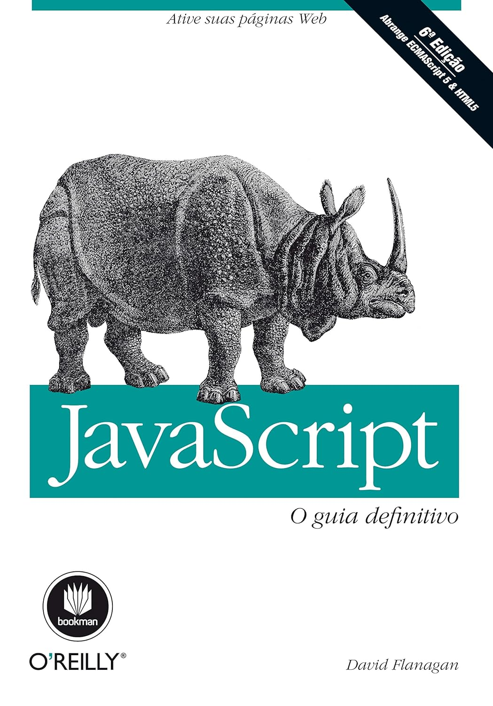

JavaScript: O guia definitivo

Autor: David Flanagan
Catergoria: Linguagem de Programação
Ano: 2012
Resumo: Referência completa para programadores, JavaScript: O guia definitivo fornece uma ampla descrição da linguagem JavaScript básica e das APIs JavaScript do lado do cliente definidas pelos navegadores Web. Em sua 6ª edição, cuidadosamente reescrita para estar de acordo com as melhores práticas de desenvolvimento Web atuais, abrange ECMAScript 5 e HTML5 e traz novos capítulos que documentam jQuery e JavaScript do lado do servidor. Recomendado para programadores experientes que desejam aprender a linguagem de programação da Web e para programadores JavaScript que desejam ampliar seus conhecimentos e dominar a linguagem, este é o guia do programador e manual de referência de JavaScript completo e definitivo.